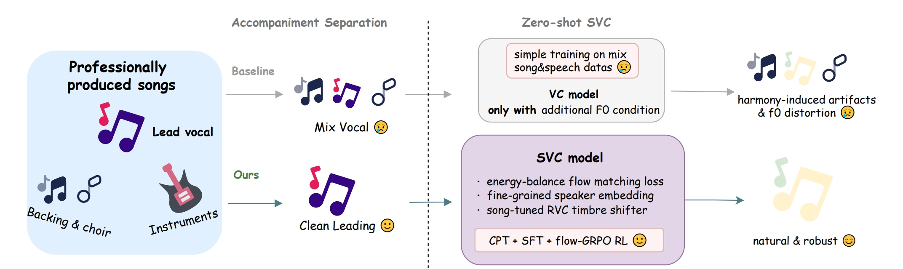
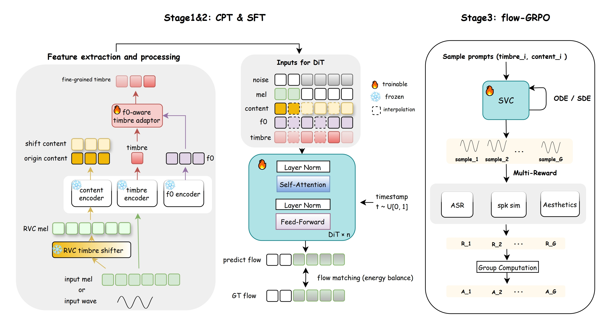

Singing voice conversion (SVC) aims to render the target singer’s timbre while preserving melody and lyrics. However, existing zero-shot SVC systems remain fragile in real songs due to harmony interference, F0 errors, and the lack of inductive biases for singing. We propose YingMusic-SVC, a robust zero-shot framework that unifies continuous pre-training, robust supervised fine-tuning, and Flow-GRPO reinforcement learning. Our model introduces a singing-trained RVC timbre shifter for timbre–content disentanglement, an F0-aware timbre adaptor for dynamic vocal expression, and an energy-balanced rectified flow matching loss to enhance high-frequency fidelity. Experiments on a graded multi-track benchmark show that YingMusic-SVC achieves consistent improvements over strong open-source baselines in timbre similarity, intelligibility, and perceptual naturalness—especially under accompanied and harmony-contaminated conditions—demonstrating its effectiveness for real-world SVC deployment.

Each example contains four tracks: Source (original song),
Reference (target timbre), Baseline (Seed-VC),
and Ours (YingMusic-SVC-Full).
Please wear headphones for the best experience. All audio samples are for research demonstration only.
If you find YingMusic-SVC helpful in your research or product, please consider citing:
@article{chen2025yingmusicsvc,
title={YingMusic-SVC: Real-World Robust Zero-Shot Singing Voice Conversion with Flow-GRPO and Singing-Specific Inductive Biases},
author={Chen, Gongyu and Zhang, Xiaoyu and Weng, Zhenqiang and Zheng, Junjie and Shen, Da and Ding, Chaofan and Zhang, Wei-Qiang and Chen, Zihao},
journal={arXiv preprint arXiv:2512.04793},
year={2025}
}